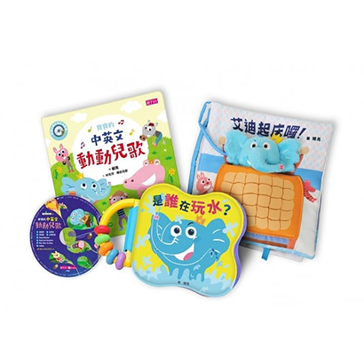

說書生

ˋ
賴馬給0-3歲寶寶的遊戲書
出版社:親子天下
作者:林芳萍 / 繪者：賴馬
大綱：
以故事書《生氣王子》中的主角艾迪為主軸，衍伸出感官布書、防水遊戲書及中英文對照兒歌本等，能夠讓孩子由做中學，刺激感官發展。


賴馬給0-3歲寶寶的遊戲書
出版社:親子天下
作者:林芳萍 / 繪者：賴馬
大綱：
以故事書《生氣王子》中的主角艾迪為主軸，衍伸出感官布書、防水遊戲書及中英文對照兒歌本等，能夠讓孩子由做中學，刺激感官發展。